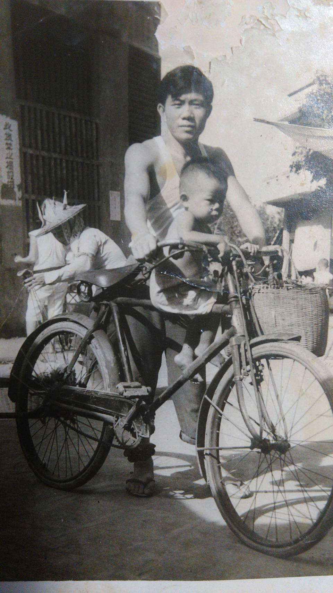
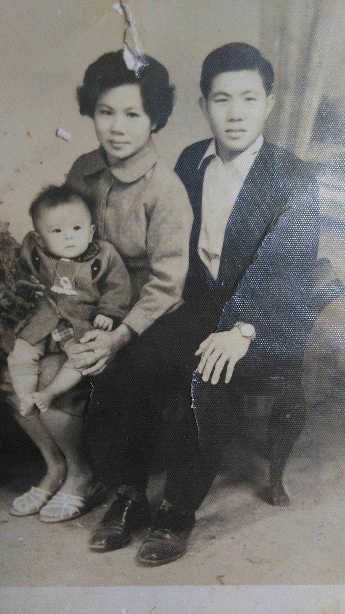

公司故事


民國39年，一個住在台南將軍鄉海邊小漁村的16歲小男孩，獨自一人到高雄找工作， 打零工，做小販， 賣小吃做過很多行業， 有一天他在市場看到人家賣魚丸 跟魚鬆，做然想到以前在魚村的時候，老一輩的人都把補獲吃不完的魚，用手工作成魚丸，魚鬆， 他也曾經在旁邊學過， 所以他自己也研究了一下魚鬆跟魚丸的做法， 也在22歲那個時候，設立了一家食品行，專門製造批發魚丸，黑輪，跟魚鬆，他就是第一代創辦人
陳水福
先生。
民國48年 陳水福先生的長子
陳炎文
出生 據現已60歲的陳炎文先生敘述 在他小學的時候大約8歲因為家庭環境的關係，必須每天半夜3點左右被叫起床捏魚丸， 5點才去睡覺7點起床上學， 他說在寒冬的時候，手摸著比冰塊還冰的魚漿， 從手心冷到心臟 ， 那種滋味是一般人沒有想像到的， 現在想起來心裡還是心有餘悸。 國中畢業後 陳彥文先生放棄 考中的公立高中 就讀五專食品工程科 ，就是希望能夠對食品有更多的了解，對自己家裡的產業能夠有幫助及改善， 經過5年的半工半讀 已及兩年的兵役退伍後， 陳先生全力的擔起整個公司的經營及改進， 民國76年正是台灣經濟起飛的時候 那個時候還沒有所謂的量販店以及各大賣場 所以整個市場買賣，幾乎都在台灣 300多個鄉鎮裡面的傳統市場 ， 而且每一個鄉鎮都有好幾個市場，每個市場都有幾家肉鬆店 那是台灣肉類加工食品最輝煌的時刻， 魚鬆的生產，並不像肉鬆這樣那麼的簡便 ，只要買到現宰豬肉就可以在家裡自己炒肉鬆， 因為各種魚類有生產季節的 ，在非生產季節你可能連那一隻與你都抓不到 ，所以各種魚類的需要在生產季節大量的進貨冷凍， 再慢慢的製造， 所以資本要比一般的肉鬆店要大得非常多，所以那個時候統計台灣的肉鬆店大概有3000家左右但是做魚鬆的確不到50家， 當時陳先生的生意只做到高雄台南屏東而已 ，在民國76年正值28歲的陳炎文先生，騎著一輛摩托車 從 嘉義雲林，台中，苗栗，新竹，桃園，台北一直到宜蘭，花蓮，一個鄉鎮一個鄉鎮的跑，拜託每一個肉鬆店，把魚鬆產品帶入到全省的鄉鎮區， 由於產品的品質優良，也得到大家的認同， 所以近有多數的肉鬆店，願意陳先生這邊購買進貨， 同時也接受國內數家大型肉類製品工廠， 做為魚鬆的代工OEM。
由早期60年代台灣的魚鬆都是用沿海捕捉到的魚類 ， 比較常看到的是紅目鰱 鯖魚 嘉鱲 狗母魚 等等 這些魚都是非常好吃的，而且製成魚鬆也相當好吃， 只是唯一的缺點就是魚刺多 ，人工篩檢並不能完全解決這個問題， 後來陳先生研發比較大型的魚類，像旗魚，鮪魚 鬼頭刀 等大型魚，就比較不會有魚刺這個問題， 同時他又發揮自己的專長 除了魚鬆以外還有製造魚絨，魚乾，魚片 ，魷魚絲，香魚片，柴魚酥，小卷絲扁魚酥，各種各式的產品。由於市場反應不錯在民國79年 陳先生在鳥松這邊買地建廠成立味統食品有股份有限公司 ， 另增加的 軍中副食品供應的部門 民國83年 因為跟家族的其他管理人員經營理念不和，所以陳先生離開了公司自己獨自到外面去 打拼 民國86年因為陳水福先生過世，所以在民國幾87年，陳先生又回到公司來跟家族分開，獨自負責乾類產品的生產製造，成立了濰豪企業股份公司以及文香珍企業行， 一直經營到現在陳先生常講的一句話就是我絕對不會去賣，我自己不敢吃的產品， 生意做的大不大不重要 夠三餐吃就可以了 但要吃得心安理得 每次如果有人說我的一雙好吃就是我最快樂的事情了